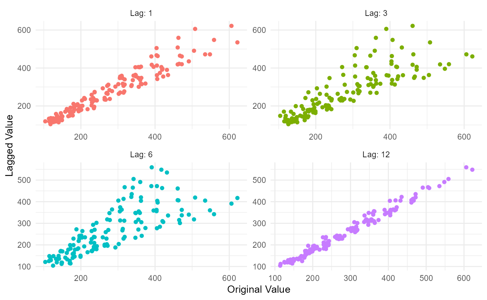

This function outputs a list object of both data and plots.
The data output are the following:
lag_list
lag_tbl
correlation_lag_matrix
correlation_lag_tbl
The plots output are the following:
lag_plot
plotly_lag_plot
correlation_heatmap
plotly_heatmap
Usage
ts_lag_correlation(
.data,
.date_col,
.value_col,
.lags = 1,
.heatmap_color_low = "white",
.heatmap_color_hi = "steelblue"
)Arguments
- .data
A tibble of time series data
- .date_col
A date column
- .value_col
The value column being analyzed
- .lags
This is a vector of integer lags, ie 1 or c(1,6,12)
- .heatmap_color_low
What color should the low values of the heatmap of the correlation matrix be, the default is 'white'
- .heatmap_color_hi
What color should the low values of the heatmap of the correlation matrix be, the default is 'steelblue'
Details
This function takes in a time series data in the form of a tibble and outputs a list object of data and plots. This function will take in an argument of '.lags' and get those lags in your data, outputting a correlation matrix, heatmap and lag plot among other things of the input data.
See also
Other Utility:
auto_stationarize(),
calibrate_and_plot(),
internal_ts_backward_event_tbl(),
internal_ts_both_event_tbl(),
internal_ts_forward_event_tbl(),
model_extraction_helper(),
ts_get_date_columns(),
ts_info_tbl(),
ts_is_date_class(),
ts_model_auto_tune(),
ts_model_compare(),
ts_model_rank_tbl(),
ts_model_spec_tune_template(),
ts_qq_plot(),
ts_scedacity_scatter_plot(),
ts_to_tbl(),
util_difflog_ts(),
util_doublediff_ts(),
util_doubledifflog_ts(),
util_log_ts(),
util_singlediff_ts()
Examples
library(dplyr)
df <- ts_to_tbl(AirPassengers) %>% select(-index)
lags <- c(1,3,6,12)
output <- ts_lag_correlation(
.data = df,
.date_col = date_col,
.value_col = value,
.lags = lags
)
output$data$correlation_lag_matrix
#> value value_lag1 value_lag3 value_lag6 value_lag12
#> value 1.0000000 0.9542938 0.8186636 0.7657001 0.9905274
#> value_lag1 0.9542938 1.0000000 0.8828054 0.7726530 0.9492382
#> value_lag3 0.8186636 0.8828054 1.0000000 0.8349550 0.8218493
#> value_lag6 0.7657001 0.7726530 0.8349550 1.0000000 0.7780911
#> value_lag12 0.9905274 0.9492382 0.8218493 0.7780911 1.0000000
output$plots$lag_plot
